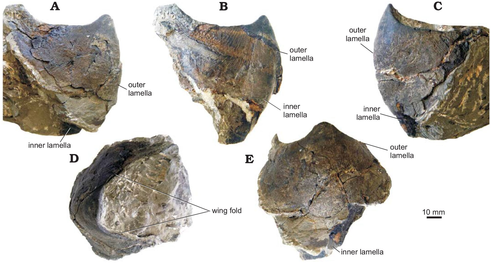
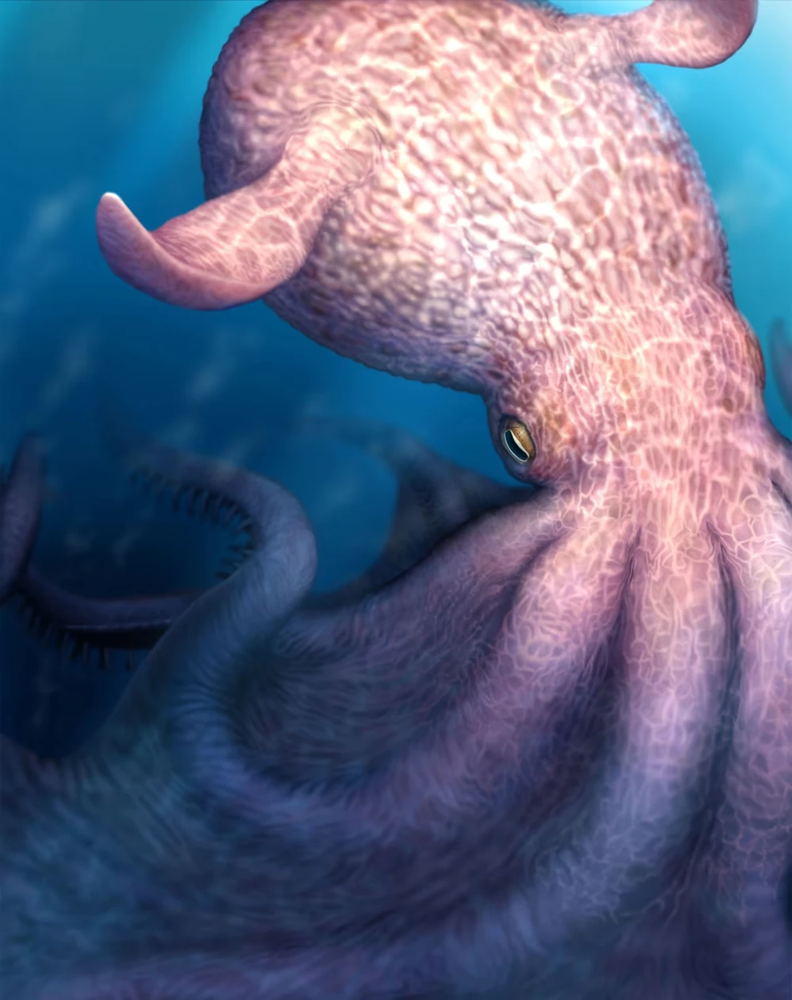
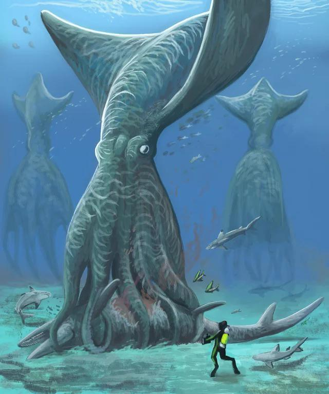
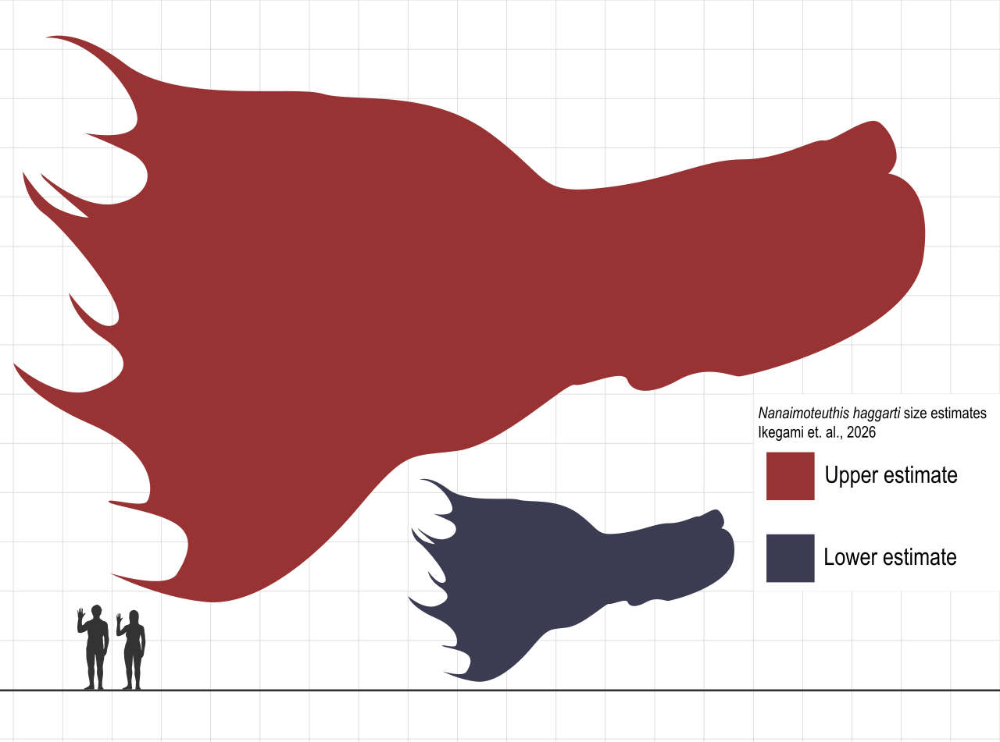
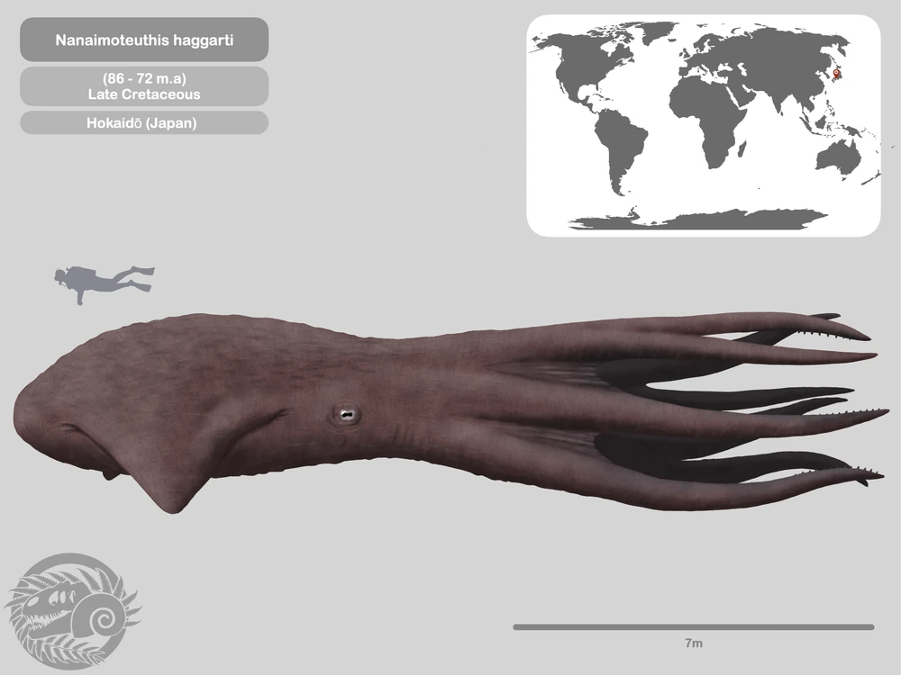

Nanaimoteuthis
Nanaimoteuthis es un género de pulpo extinto del Cretácico Superior de Canadá y Japón conocido solo por picos aislados. La especie N. haggarti puede haber estado entre los cefalópodos más grandes que jamás hayan vivido, con una longitud total estimada potencial entre 6,6 y 18,6 metros (21,7 y 61,0 pies), aunque algunos investigadores han expresado dudas sobre el extremo superior de la estimación.
Nanaimoteuthis
Rango temporal: Cretácico (Cenomaniense–Campaniense)
Hace 100-72 millones de años

Clasificación científica
- Reino: Animalia
- Filo: Mollusca
- Clase: Cephalopoda
- Subclase: Coleoidea
- Superorden: Octopodiformes
- Orden: Octopoda
- Género: Nanaimoteuthis
Especie tipo
Nanaimoteuthis jeletzkyi
Tanabe et al., 2008
Especies
- Nanaimoteuthis jeletzkyi
- Nanaimoteuthis haggarti
Sinónimos
Tanabe et al., 2008
Descubrimiento y denominación

La especie tipo, Nanaimoteuthis jeletzkyi, fue nombrada por Kazushige Tanabe y sus colegas en 2008 y asignada al orden Vampyromorphida. El holotipo, CDM 2006.1.1, fue descubierto en la Formación Pender del Grupo Nanaimo en la Isla de Vancouver, Canadá. Tanabe y sus colegas nombraron otras dos especies adicionales de pulpo cirrado, Paleocirroteuthis pacifica y P. haggarti, también conocidas de la Formación Pender.] Dos especies adicionales, N. yokotai y N. hikidai, fueron nombradas posteriormente basándose en material de pico del Grupo Yezo de Hokkaido, Japón.
En 2026, Ikegami y colegas sinonimizaron Nanaimoteuthis y Paleocirroteuthis, dando prioridad a la primera, y reclasificaron el género como un pulpo cirrado basándose en la morfología del pico. Se sugirió que P. pacifica fuera un sinónimo menor de N. jeletzkyi, mientras que P. haggarti fue reclasificada como la otra especie del género, N. haggarti. La especie anteriormente mencionada N. hikidai fue reinterpretada como un sinónimo menor de N. haggarti, y N. yokotai fue identificada como una especie indeterminada dentro del género, ya que esta última no conserva una mandíbula inferior para compararla con otras especies.

Descripción

En publicaciones anteriores, basándose en las proporciones de los calamares vampiro existentes, la longitud del manto de N. yokotai se estimó en alrededor de 54 centímetros (21,3 plg), y la de N. hikidai alrededor de 70 centímetros (27,6 plg). Además, los comunicados de prensa y los artículos de noticias citaron una longitud estimada de 1,1 metros (1,2 yd) para N. jeletzkyi de Hokkaido, y longitud del manto de 1,6 metros (1,7 yd), longitud total de 2,4 metros (2,6 yd) para N. hikidai.
En 2026, Ikegami y sus colegas describieron mandíbulas inferiores aisladas de ambas especies de Nanaimoteuthis y midieron la longitud de la capucha de N. jeletzkyi en 39.6 mm (1,56 en) y N. haggarti en 86.4 mm (3,40 en) respectivamente, la última de las cuales es aproximadamente 1,5 veces más grande que la longitud de la capucha del calamar gigante más grande. Estimaron la longitud del manto de N. jeletzkyi en 0,67-1,84 metros (0,7-2 yd), lo que sugiere una longitud total del animal de 2,8-7,7 metros (3,1-8,4 yd) . También estimaron la longitud del manto de N. haggarti en 1,58 metros (1,7 yd) (basado en Cirroteuthis muelleri) a 4,43 metros (4,8 yd) (basado en Stauroteuthis syrtensis), lo que lleva a un rango de longitud total de 6,6 y 18,6 metros (7,2 y 20,3 yd). Otros investigadores dudaron de que el límite superior de la estimación de longitud fuera preciso, [incluyendo a Christian Klug, un paleontólogo de cefalópodos de la Universidad de Zúrich, quien afirmó que las estimaciones eran "bastante extremas" y señaló que existe un nivel de incertidumbre sobre el animal debido a que solo las mandíbulas se fosilizaron.
Paleoecología
Basándose en los patrones de desgaste de los especímenes de N. jeletzkyi y N. haggarti, Ikegami et al. concluyeron que estos cefalópodos se alimentaban de animales con esqueletos más duros que sus mandíbulas quitinosas. Los autores descartaron la abrasión como posible causa, ya que todos los especímenes estudiados se encontraron en sedimentos formados en condiciones profundas y de baja energía. Los investigadores sugirieron que enormes pulpos con aletas, a los que compararon con el mítico kraken, competían con los vertebrados en el Océano Pacífico Norte y eran los principales depredadores allí durante el Cretácico Superior. Los autores señalaron que, como resultado de la evolución convergente, los cefalópodos y los vertebrados adquirieron mandíbulas y perdieron sus exoesqueletos, lo que llevó a la aparición de depredadores ápice en ambos grupos. Otros paleontólogos no involucrados en el estudio, incluidos Adiël Klompmaker y Jakob Vinther, afirmaron que los fósiles no prueban de manera definitiva que Nanaimoteuthis fuera un superdepredador.
